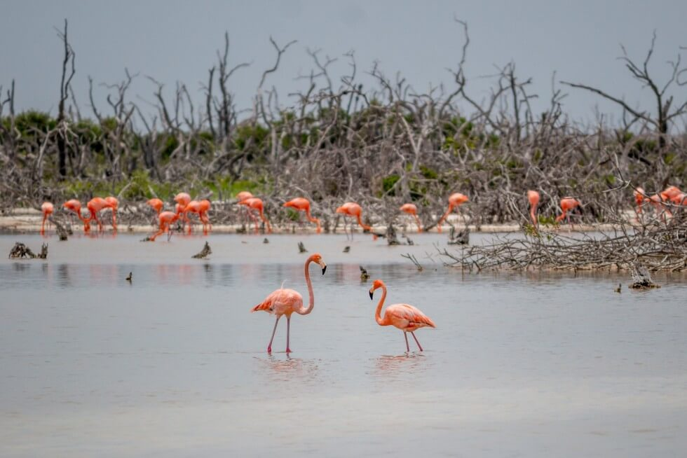

Flamencos del Caribe (Phoenicopterus ruber) en su hábitat natural de manglares en la Península de Yucatán
5 de Mayo, 2026
Guardianes Rosados: La Fundación Pedro y Elena Hernández y la Conservación del Flamenco en Quintana Roo
En las aguas poco profundas y manglares de la Península de Yucatán, el flamenco del Caribe (Phoenicopterus ruber) brilla como un ícono de la biodiversidad. Su color rosado vibrante no solo cautiva a turistas de todo el mundo, sino que también indica la salud de ecosistemas costeros frágiles. En Quintana Roo, particularmente en Isla Mujeres y la Zona Continental, la Fundación Pedro y Elena Hernández A.C. trabaja para proteger esta especie emblemática, combinando ciencia, educación y turismo sustentable.
Una Fundación con Raíces en la Conservación
Fundada en 2002, la Fundación Pedro y Elena Hernández se dedica a la conservación de áreas naturales protegidas en México, con un enfoque especial en la Península de Yucatán. Su Programa Península de Yucatán incluye monitoreo científico, restauración de hábitats y sensibilización comunitaria. Aunque sus esfuerzos más intensos se centran en reservas como Ría Lagartos (Yucatán), extienden su impacto a Quintana Roo a través de alianzas estratégicas.
En la zona de Isla Mujeres y Puerto Morelos, la Fundación colabora activamente con el sector turístico. Recientemente firmaron un convenio con Skål International México (capítulos Mérida e Isla Mujeres & Puerto Morelos) durante el Tianguis Turístico 2026. Este acuerdo busca integrar a hoteles, operadores de tours y guías en la protección del flamenco, promoviendo prácticas responsables que reduzcan el impacto humano en sus hábitats.
Esfuerzos Específicos en Isla Mujeres y Zona Continental
Los flamencos no anidan masivamente en Quintana Roo como en Celestún o Ría Lagartos, pero encuentran refugio temporal en sitios como la Laguna Chacmuchuch (Zona Continental de Isla Mujeres). Allí, las condiciones de manglares y aguas salobres les permiten alimentarse y descansar durante sus movimientos estacionales.
La Fundación apoya:
- Monitoreo y vigilancia para reducir perturbaciones.
- Control de fauna feral que pueda amenazar colonias.
- Evaluación de impactos del cambio climático y turismo.
- Generación de buenas prácticas turísticas, como distancias mínimas de observación y límites de visitantes.
A través de FlamencoLab y otras iniciativas, promueven el avistamiento responsable. Los turistas pueden convertirse en "visitantes responsables" registrando observaciones que contribuyan a la ciencia ciudadana.
Turismo Sustentable: Ver sin Perjudicar
El turismo representa una doble espada para los flamencos. Por un lado, genera ingresos para comunidades locales; por otro, el ruido, las embarcaciones cercanas y la basura pueden estresar a las aves y afectar su reproducción.
La Fundación y sus aliados promueven un modelo de turismo regenerativo:
- Tours educativos guiados por locales capacitados que explican la ecología del flamenco.
- Capacitación para operadores en Isla Mujeres y Puerto Morelos, para que ofrezcan experiencias de bajo impacto.
- Sensibilización a visitantes: mantener distancia, no usar flash en fotos y respetar zonas de anidación.
- Vinculación comunitaria: apoyar economías locales que dependan de la conservación, como guías, artesanos y hospedajes ecológicos.
Imagínate llegar en kayak silencioso al atardecer en la zona continental, observar una parvada rosada alimentándose mientras un guía comparte datos sobre su migración. Este tipo de experiencia no solo emociona, sino que financia directamente la protección.
¿Por Qué Importa?
El flamenco del Caribe es una "especie paraguas": protegerlo beneficia a manglares, peces, aves migratorias y comunidades humanas. En un destino turístico tan dinámico como Quintana Roo, iniciativas como las de la Fundación demuestran que desarrollo y conservación pueden ir de la mano.
Cómo Puedes Contribuir
- Elige operadores certificados o aliados de la Fundación cuando visites Isla Mujeres.
- Participa en campañas de limpieza o talleres ambientales.
- Comparte información responsable en redes: #FlamencoDelCaribe #TurismoSustentable.
- Apoya donando o visitando proyectos como Casa Artemia en Yucatán, que ofrece experiencias inmersivas.
La Fundación Pedro y Elena Hernández nos recuerda que cada acción cuenta. Al visitar Quintana Roo, no solo busques fotos perfectas de flamencos rosados: sé parte de su historia de supervivencia. Tu viaje puede marcar la diferencia para que estas aves sigan pintando de rosa los cielos del Caribe mexicano.
← Volver a Noticias